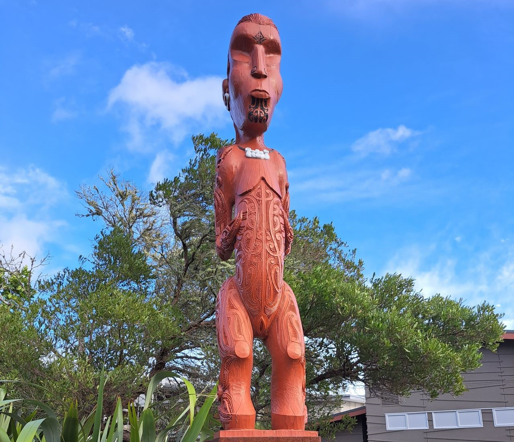
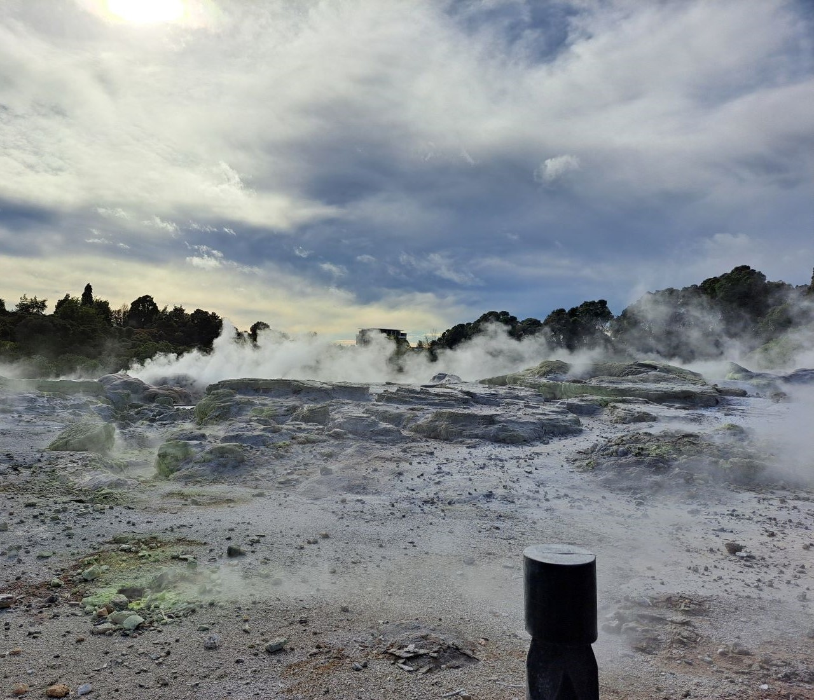
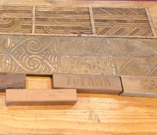
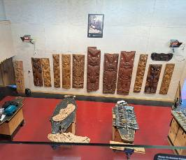
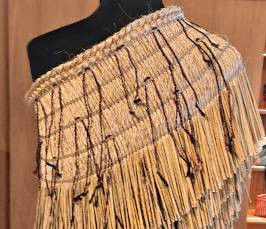
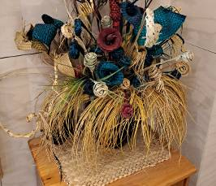
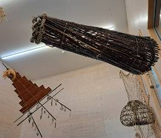
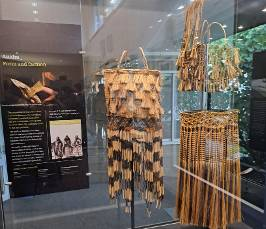

There are over 500 pools and 65 geyser vents, each with their own name,
are found in the 70 hectare Te Whakarewarewa geothermal valley in Rotorua.
Our traditional Maori explanation of Te Whakarewarewa Geothermal Valley states
that this place was one of the area’s ‘Te Pupu’ and ‘Te Hoata’, the Goddesses of Fire,
emerged from the earth’s core while trying to find their brother Ngātoro-i-rangi,
who was stranded on Mount Tongariro. As they rose to the surface looking for their brother,
they left part of the fire they carried, creating geysers, hot springs and mud pools,
creating the geothermal activity that remains today.
Today, fulltime carving students study for three years at the national carving school, under the guidance of those, such as Clive Fugill and James Rickard, master carvers at Te Puia who were once institute carving students themselves.
At the National Weaving school, students are taught the skills and traditions of a craft hundreds of years old. “I believe weaving can only be learnt the old way - by sitting, by listening, by touching and by doing,” says head of the weaving school, Edna Pahewa.